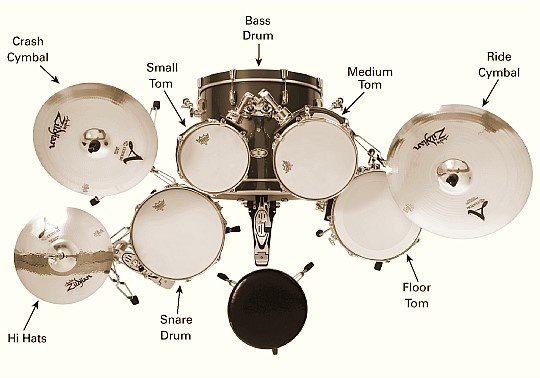
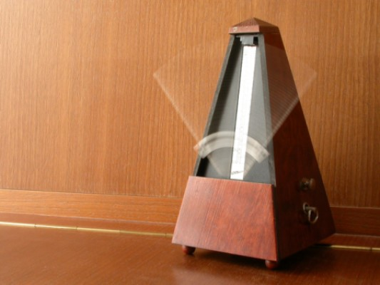
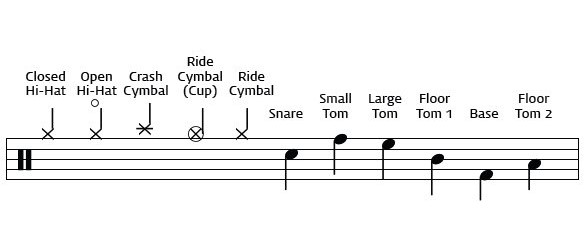

현근의 Drum 잘치는 방법
링크: 돌아가기
Drum의 구성

드럼: 주가 되는 드럼은 Snare Drum과 Bass Drum이며 여러 필인을 넣을 때 Tom드럼들이 사용된다.
Snare Drum, Bass Drum, Small Tom, Medium Tom, Floor Tom
심벌: 기본 박자를 Hi Hats 심벌로 치며 다른 심벌들은 곡의 음이 커질 때 이용되며 필인에 추가된다.
Hi Hats, Crash Cymbal, Ride Cymbal
스틱: 스틱은 보통 5A의 채를 쓴다.
Drum을 치기 위해 필요한 것
박자감: 드럼은 음악에서 가장 중요한 박자를 책임지고 있는 악기이므로 박자를 빠르고 느리고를 잘 하지 못해주면 음악 전체에 피해를 주게 된다. 그러므로 박자감이 좋아야 드럼을 치기에 편할 것이다.
보통 박자감 연습은 메트로놈으로 연습하는 것이 가장 실력이 잘 는다.

체력: 드럼이 힘 좋은 사람은 어느 정도 가볍게 칠 수도 있지만 힘이 그다지 좋지 않은 사람들은 게속된 움직임으로 통증이 온다. 어느 정도의 체력은 되야 좀 더 드럼에 집중 할 수 있을 것이다.
드럼 악보 보는 법
밑의 음표가 드럼 악보에 쓰이는 악보의 음표를 바로 보고 하는 것이 어렵기 때문에 익숙해질 필요가 있다.

드럼은 누구나 배울 수 있고 익숙해지기만 하면 쉽게 칠 수 있다. 하지만 연습을 꾸준히 안한다면 실력은 늘지 않을 것이다.
나의 드럼 실력
경력:
-초등학교 5학년 방과후 드럼교실
-고등학교 1학년 교회 찬양팀 드러머
-고등학교 2학년 서울고 관악부 드러머
실력:
드럼을 취미로 하는 것 치고는 보통이상은 다루며 계속해서 성장할 가능성이 보이고 있다.
드럼소리가 좋은 곡:
드럼소리가 좋은 곡(극히 주관적)
| 곡 제목 |
가수 |
연도 |
작가 |
장르 |
| Chandelier |
Sia |
2014 |
Sia Furler |
팝 |
| Believer |
Imagine Dragons |
2017 |
Barberry Records |
팝 |
| 빛 |
BREAKERZ |
2009 |
다이고 |
록 |
| Counting Stars |
OneRepublic |
2013 |
다이고 |
팝 |
| 약한 나로 강하게 |
다윗의 장막 |
2003 |
Reuben Morgan |
CCM |
드럼은 거의 모든 곡의 전율과 하이라이트에서 강한 인상을 주는 악기이다. 모두 드럼의 매력에 빠졌으면 한다.